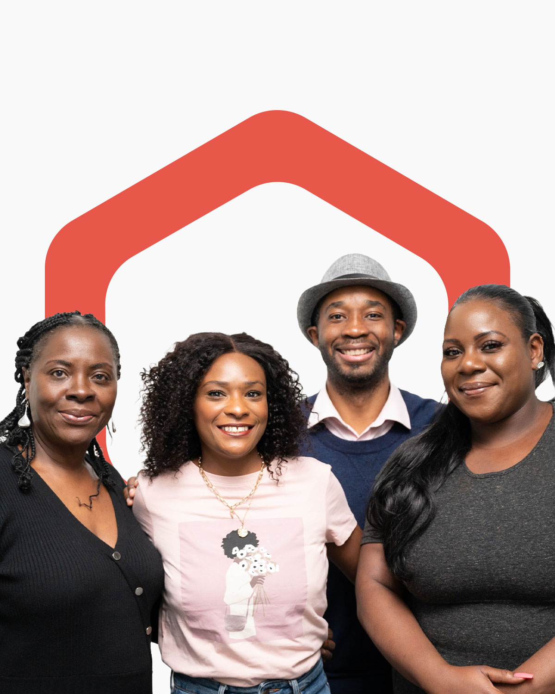

Featured video
Stories that shape Africa
African stories. Told with depth, dignity and an authentic voice.
Pin Africa brought together journalism, film, photography and digital storytelling to share the experiences, creativity and perspectives of Africa and its diaspora.
We have ended regular publishing.
This page preserves selected work and the purpose behind it, with links to stories that remain available on our social channels and in the archive.
Thank you to everyone who told, read, watched and shared our stories.


- Journalism
- Film
- Photography
- Digital storytelling
Who we were
Pin Africa was a mission-driven African digital media platform and social enterprise committed to independent journalism with an authentic African voice and a nuanced perspective.
We celebrated culture, heritage and creativity, amplified innovation, and examined the issues shaping African lives. Our work challenged narrow portrayals of the continent by placing African voices, knowledge and lived experience at the centre.
Through Acquire by Pin Africa, we also supported emerging journalists and storytellers with skills, resources and practical experience.
Our mission
To broaden the global understanding of Africa through credible, compelling storytelling, while helping African storytellers develop the skills and opportunities to tell their own stories.
Our values
Integrity
Accurate, independent and responsible journalism.
Dignity
Stories that respect the people and communities they portray.
African agency
African voices and perspectives shaping the narrative.
Creativity
Film, photography and digital formats that help audiences see and understand more.
Public interest
Free and independent media that inform communities and contribute to peaceful, prosperous and democratic societies.
- Integrity
- Dignity
- African agency
- Creativity
- Public interest
Selected Work
A selection of stories, films and creative collaborations that reflect Pin Africa’s work.
Featured campaign
We (Are) Invested
19 women photographers and photojournalists
15 African countries
A shared commitment to women’s visibility and progress.
For Women’s History Month 2024, Pin Africa and Unpublished Africa brought together photographic talent from across the continent through We (Are) Invested: a campaign celebrating women’s work, championing their perspectives and encouraging collective investment in their progress.
Through a virtual exhibition, spotlight features and a public conversation, the campaign created space for African women to share their stories, discuss barriers in the industry and connect around the experiences shaping their work.
Panel & legacy
The exhibition brought audiences into women’s working lives, communities and creative journeys. Alongside it, our panel, How to Practically Pull Others Up as You Rise, held on 7 March 2024, convened photographers and organisation founders to explore practical support for emerging talent, from mentorship and visibility to skills and professional opportunities.
Together, these activities demonstrated Pin Africa’s ability to convene talent across borders, build creative partnerships and combine journalism, curation and digital storytelling around a shared purpose: ensuring African women’s perspectives are seen, heard and valued.
The virtual exhibition has closed. Explore the project record and campaign announcement below.
Video storytelling
Selected films from Pin Africa’s video storytelling.
-
-
Edna Adan Building a Hospital in Somaliland
The story of Edna Adan’s work to build a hospital in Somaliland using her pension.
Watch the film : Edna Adan Building a Hospital in Somaliland -
Afif Ben Yedder on Building IC Publications
The founder of IC Publications reflects on success.
Watch the interview : Afif Ben Yedder on Building IC Publications


Mobile storytelling
Stories created for audiences on the move, bringing African people, ideas and experiences to the screen.


Visual interactive storytelling
Explore stories through photography, reporting and interactive digital experiences.
-
- Kasaï region, DRC
- Interactive
Congo’s Ecological Coolers
Meet the women preserving the craft of clay water pots in the DRC’s Kasaï region, where traditional knowledge helps communities keep drinking water cool.
Explore the story : Congo’s Ecological Coolers (opens in a new tab) -
- Oshodi, Lagos
- Interactive
The Chess Kings and Queens of Oshodi
How Chess in Slums Africa used chess to open doors and spark learning for children in Oshodi, Lagos.
Explore the story : The Chess Kings and Queens of Oshodi (opens in a new tab) -
- Senegal
- Interactive
Senegal’s Freestyle Football Sensation
Meet Cheikh Ba, known as Cheikh Footstyle, whose football skills and digital creativity offer a fresh perspective on everyday life in Senegal.
Explore the story : Senegal’s Freestyle Football Sensation (opens in a new tab)
Articles
Selected reporting and perspectives from Pin Africa’s written archive.
-
The Mother Bosses Revolution in the DRC’s Mining Sector
-
Beyond the Ngab: Sara Benabdallah’s Portrayal of Moroccan Women Through Her Lens
-
Salpha Energy Leads the Fight Against Energy Poverty in Nigeria
Live News Update
Our Live News Update feature was a dedicated live news page, updated daily by Pin Africa’s interns and news editor. The live update tool brought news updates together in one place and gave interns practical experience contributing to our daily news coverage.
Explore more of our work
-
Acquire by Pin Africa
acquire.pin-africa.com
Discover our journalism training, media development projects and work supporting African storytellers.
Acquire by Pin Africa (opens in a new tab) -
Pinned Media
pinned-media.com
Explore our film and multimedia production work.
Pinned Media (opens in a new tab) -
Founder’s portfolio
benedicte.info
Benedicte Kalombo
Founder’s portfolio: Benedicte Kalombo (opens in a new tab)